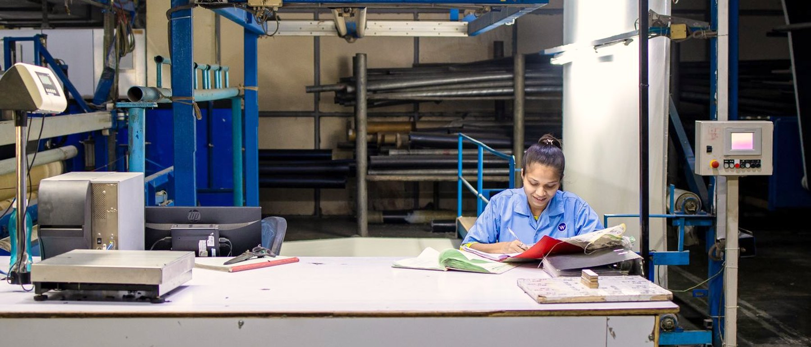
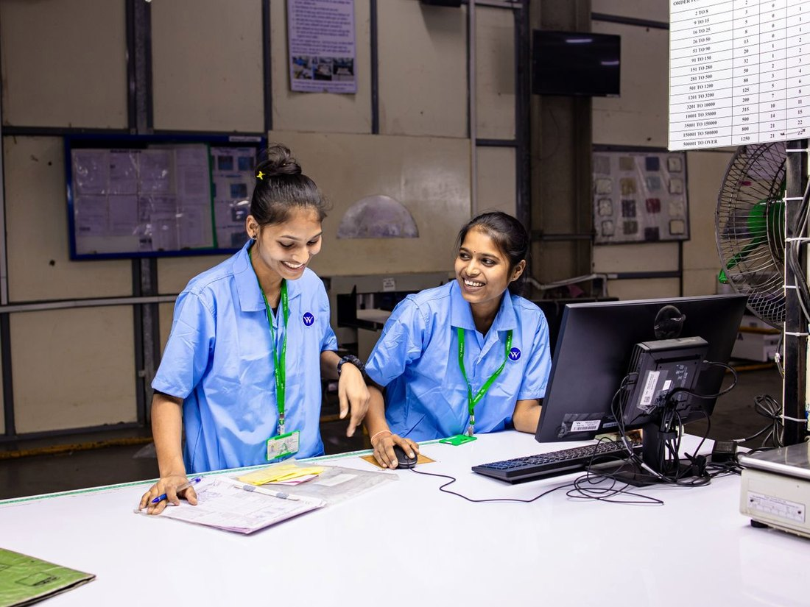

01
Leakage
Money the business is already earning but not keeping. Pricing drift, rework, unbilled work, leaked discounts, stock that quietly ages.
Kolkata, India · Offline
India's MSME AI-native company. We find where your MSME leaks money and build AI into how it runs — not a chatbot bolted on the side.

The founders’ film goes here — to be shot
Businesses, institutions, and the owners behind them we have worked with across India


People trained in practical AI use
Of them, business owners

Placeholder photography — to be replaced with a shoot on a client floor
Three lenses
Most businesses do not have an AI problem. They have a money problem that AI happens to be very good at solving. These are the three places we look first.
Money the business is already earning but not keeping. Pricing drift, rework, unbilled work, leaked discounts, stock that quietly ages.
Risk sitting in one customer, one supplier, one machine, or one person who holds the process in their head.
Work the business could be winning and is not — enquiries that go cold, capacity left idle, decisions taken too late to matter.
The path

Stage 01
Two to three weeks inside the business. We sit with your numbers, walk the floor, and talk to the people who actually do the work — then map where money leaks, where risk concentrates, and where opportunity is being missed.
You leave with
Stage 02
We build the chosen moves into how the business runs — the workflows, the tools, the handovers — and train your team to run them without us. We stay until it holds on an ordinary week.
You leave with
Featured in
Rather build the skill first? Start with free training — it's optional, and every path leads here.